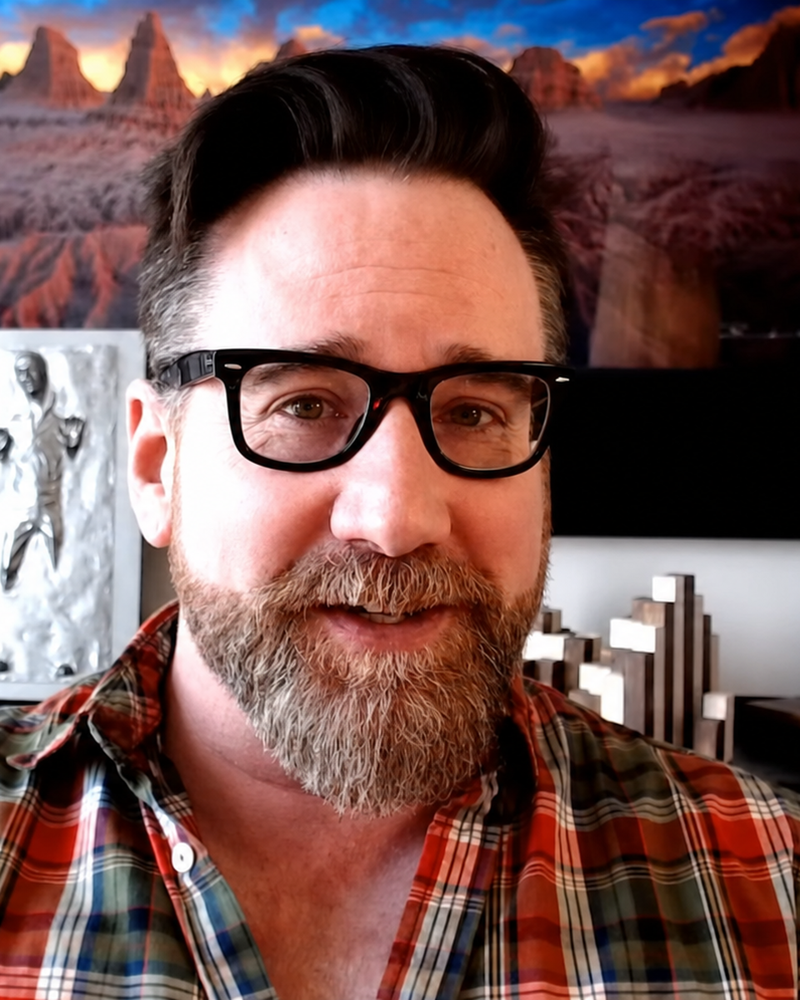

01
Firsthand context
Private conversations with Google.
Josh can explain what Google told him privately, where those conversations matched the public guidance, and where independent testing found something different.
SEO educator / researcher / podcast guest
Clear explanations. Real testing. Useful takeaways.
Josh Bachynski brings nearly three decades in search, current experiments and graduate work in philosophy to explanations people want to keep listening to.

Firsthand context
Josh can explain what Google told him privately, where those conversations matched the public guidance, and where independent testing found something different.
Public accountability
Long before AI search, Josh examined Google’s power in industry coverage and on the TEDx stage—then taught audiences why the consequences matter.
The latest booking
Search with Candour is a weekly SEO and search-marketing show featuring industry experts. Josh’s July 2026 interview ran for 1:19:39 and covered seven distinct producer-ready subjects.
“A great, insightful conversation.”
Jack Chambers-Ward, closing the episode
Through the years
Nearly three decades of search history, public teaching and moments that changed the industry conversation.
Google / private conversation
After a private one-on-one, Josh published his ethical case against Google’s punitive penalties, Knowledge Graph practices and manual actions. Matt Cutts publicly confirmed the conversation happened; Search Engine Roundtable said Josh’s account made it appear Google had conceded most of the case.
The beginning
Josh’s search career began before Google became the industry’s central platform.
Whiteboard Friday
Moz published Josh’s four evidence-based dos and don’ts drawn from statements by Google personnel.
Disavowgate
Josh examined 12 claimed disavow-only Penguin recoveries and could not confirm that disavow alone caused the recovery.
Beyond the SEO industry
The Future of Google, Search, and Ethics connected ranking systems with public knowledge, commerce and accountability.
Conference creator
Entrepreneur listed Josh’s two-day White Hat vs. Black Hat SEO Symposium first among its three standout underground SEO conferences.
Search community honor
Search Engine Roundtable highlighted Josh’s scientific testing, constant publishing and willingness to ask questions others were not asking.
Search with Candour
A 79-minute conversation connected current ranking experiments with the same questions about evidence, incentives and ethics.
Five clear lessons ready to record
Each concept gives listeners a clear question, a useful explanation and a sequence the host can use as written.
Current / evidence-led
Listener promise: understand what changed between the traditional results and AI answers, how the change can be measured, and which assumptions no longer deserve automatic trust.
Clear / practical
Listener promise: learn how controlled tests work, why informed advice can differ, and how to make decisions while communicating uncertainty clearly.
Systems / business ethics
Listener promise: understand how advertising incentives, brand preference, AI answers and control over discovery affect marketers and publishers.
Firsthand / inside Google
Listener promise: hear the context Josh received directly in private conversations with Google, how it compared with the public guidance, and what independent testing later showed.
Public record / accountability
Listener promise: understand the case Josh made in public, from industry coverage to TEDx, and why Google’s influence over information, businesses and the open web matters even more now.
76-second producer proof
The opening excerpt shows Josh making the current search shift understandable, connecting the testing to real business decisions and giving listeners a clear reason to care.
Experienced in the format
Producer kit
Use the copy as written or edit it to match the show. The facts and source links are public.
Josh Bachynski is an SEO researcher, TEDx speaker and founder of Underground SEO University. Working in search since 1997, he is known for controlled ranking tests that challenge industry consensus. His graduate work in ethics and decision theory gives him an unusual second perspective on Google, AI search and the incentives shaping the web.
Josh Bachynski is an SEO researcher, educator and TEDx speaker who has worked in search since 1997. He founded Underground SEO University and leads Be Found Everywhere, where his work focuses on controlled ranking experiments, AI search and forensic SEO. Josh holds a master’s degree in philosophy and completed doctoral research in ethics and rational decision theory. That combination—practical testing plus academic analysis—lets him discuss both what Google’s systems appear to reward and whether the incentives behind those systems serve businesses and the open web. He has taught at six institutions, presented from Sacramento to Poznań, hosted four original shows and appeared in 91 source-linked guest interviews and broadcasts.
My guest is Josh Bachynski, an SEO educator, researcher, TEDx speaker and founder of Underground SEO University. He has worked in search since 1997, built his career around controlled ranking experiments, and studied ethics and rational decision theory at the graduate level. Today he is helping us understand what current testing shows about AI search and what marketers can learn from it.

One email. A complete pitch.
The booking email opens with fields for the show, format, topic and dates. Send it to Josh’s media address and continue directly.
Email media@joshbachynski.com